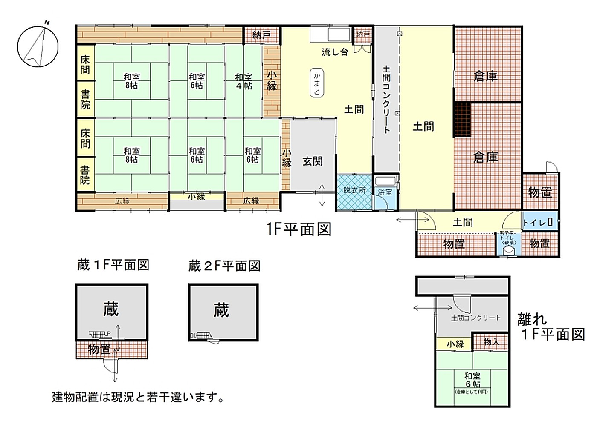

Mountain foothills · Ōtani, Iga
Kominka with farmland and woodland, original kamado stove — 7,331 m² of land
¥7,800,000≈ €44,100

Condition
Major repair and renovation needed · Toilet not usable · Septic tank must be installed · Part of the boundary wall has collapsed
From the Iga City Akiya Bank survey. We translate the full inspection notes on request.
Key facts
- Location
- Ōtani, Iga, Mie 伊賀市大谷
- Area
- Mountain foothills 山間部エリア
- Layout
- 7K
- Structure
- Wooden, single storey
- Built
- Unknown
- Land
- 7,331.60 m²
- Floor area
- 286.04 m²
- Water
- Mains water
- Drainage
- Public drainage channel (septic tank must be installed)
- Toilet
- Pit toilet (not usable)
- Bath
- Wood / kerosene
- Gas
- Propane
- Access
- JR Kansai Line, Iga-Ueno Station 1.4 km · Ōtani bus stop 0.3 km
- Schools
- Elementary 0.7 km · Junior high 2.2 km
- Shops
- Supermarket 1.3 km · Convenience store 1.8 km
- Other
- Parking for 3–4 · Road 4.3 m wide · Farmland needs Agricultural Land Act permission before contract
360° virtual tour
Walk through the houseLook around every room in 360°, from your own sofa. Opens the Iga City virtual tour in a new tab ↗Video tour
Floor plan

Location
The exact address is shared after registration — the map shows the district.
Similar homes
-
 Rural farmland360° tour
Rural farmland360° tourAo, Iga No. 580
Kominka within walking distance of station, shops and convenience store
- 8DK
- 228 m² house
- 897 m² land
¥6,500,000≈ €36,700
-
 Rural farmland360° tour
Rural farmland360° tourKami-Awa, Iga No. 450
Large two-storey kominka with a 478 m² field
- 10DK
- 286 m² house
- 766 m² land
¥6,000,000≈ €33,900
-
 Rural farmland360° tour
Rural farmland360° tourKōno, Iga No. 614
Kominka with a two-storey storehouse and a field nearby
- 10DK
- 134 m² house
- 445 m² land
¥5,800,000≈ €32,800